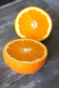
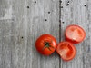

Supermarket List 😎
Tianquiztli list
Ya sea un supermercado, un mercado o hasta en un tianguis podras conseguir los siguientes productos
Frutas
5Kg de Naranja 🍊

1Kg de Manzana 🍎
1 Piña 🍍
1 Sandia 🍉
Verduras
2kg de Jitomate 🍅

1kg de Zanahoria